Sistema Estratégico de Transporte Público · Ibagué
Manual de usuario
Tablero de seguimiento de proyectos
Cómo administrar el contenido, y cómo consultar y presentar el tablero
Versión 1.0 · 22 de octubre de 2026 Las capturas usan datos de ejemplo.
Contenido
Parte 1 · Para quien administra el tablero
1. Lo esencial en un minuto
2. Entrar al panel
3. La pantalla de inicio
4. Mostrar u ocultar un proyecto
5. Agregar un proyecto nuevo
6. Editar un proyecto
7. Subir puntos y tramos al mapa
8. Fotos y derechos de autor
9. Publicar y volver atrás
10. Seguridad y problemas frecuentes
Parte 2 · Para quien consulta o presenta el tablero
11. Cómo acceder
12. La portada: paraderos, semáforos y vías
13. Dentro de un proyecto
14. En el celular, accesibilidad y privacidad
15. Guion para una presentación de 10 minutos
Anexos
A. Archivos que acepta el mapa
B. Glosario
C. Contacto y documentos legales
Cómo leer este manual
Cada capítulo es corto y se puede leer por separado.
En las capturas, los círculos rojos 1 señalan lo que se explica en la lista de al lado.
Los recuadros verdes son consejos; los amarillos, cosas que cuidar.
Todo lo que aparece es de ejemplo: un «Proyecto de ejemplo» creado solo para el manual.
Parte 1
Para quien administra el tablero (editar, agregar y publicar información)
1 Lo esencial en un minuto
Existen dos páginas distintas. Lo que cambies en el panel no se ve en el sitio público hasta que lo publiques.
Página
Para qué sirve
Quién entra
Sitio público tablero-setp.vercel.app
Lo que ve la ciudadanía: proyectos, avance, mapas, recursos y documentos.
Cualquier persona, sin registro.
Panel de administración …/admin/
Donde se edita, se agrega y se publica la información. No está enlazado desde el sitio público.
Solo personal autorizado, con usuario y contraseña.
Tres pasos para cualquier cambio
1
Edita. Todo se guarda solo, como borrador. Nadie más lo ve.
2
Revisa. En el editor, el panel de la derecha muestra cómo queda la página tal como la verá el público.
3
Publica. Con el botón «Publicar cambios», el público ve la nueva versión. Si algo sale mal, se puede volver a una versión anterior.
Una excepción. El interruptor «Visible / Oculto» de cada proyecto actúa al instante, sin publicar. Sirve para quitar de la vista pública un proyecto con información dudosa.
Palabras que verás
Palabra
Qué significa
Borrador
La versión que estás editando. Se guarda sola.
Publicar
Enviar el borrador al sitio público.
Sección
Un bloque de la página de un proyecto: cifras, mapa, fotos, documentos…
Capa, punto y tramo
En un mapa: un punto es un lugar (paradero, semáforo); un tramo es un recorrido de vía; una capa agrupa varios de lo mismo.
Versión
Una copia de lo que se publicó en un momento. Se guardan las últimas 15.
2 Entrar al panel
1
Abre la dirección del sitio y agrega /admin/ al final.
2
Escribe el usuario y la contraseña que te entregó quien administra el proyecto en Vercel.
3
Marca las dos casillas, cada una por separado: Términos y Condiciones, y Política de Privacidad. Cada una tiene su enlace para leerla.
4
Pulsa Ingresar.
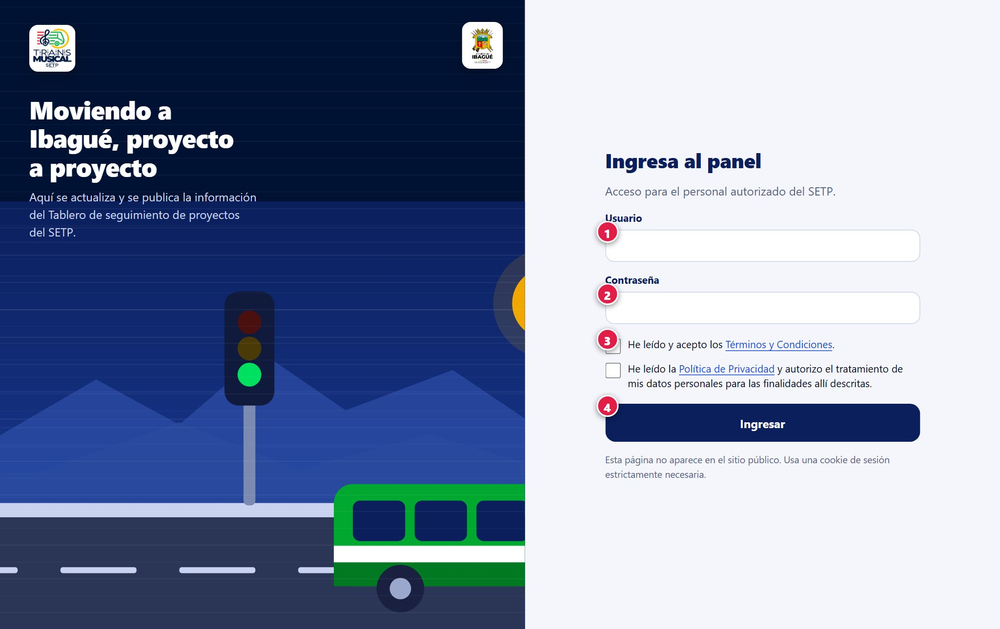
Pantalla de ingreso.
Primer ingreso: cambia la contraseña inicial. Arriba a la derecha, «Cambiar contraseña»: mínimo 10 caracteres con mayúscula, minúscula y número. Al cambiarla se cierran las demás sesiones.
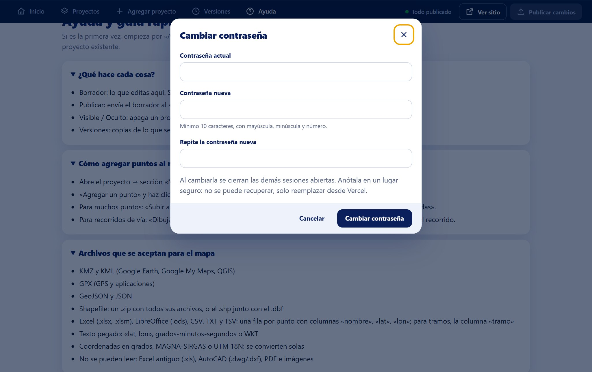
Ventana para cambiar la contraseña.
La sesión dura 8 horas. Si termina mientras trabajas, el panel te pide ingresar de nuevo y tus cambios no se pierden.
Tras 8 intentos fallidos, el acceso se bloquea 15 minutos.
Cuando termines, pulsa «Salir», sobre todo en computadores compartidos.
Si olvidas la contraseña, quien administra Vercel puede definir una nueva (variables ADMIN_USER y ADMIN_PASSWORD).
3 La pantalla de inicio
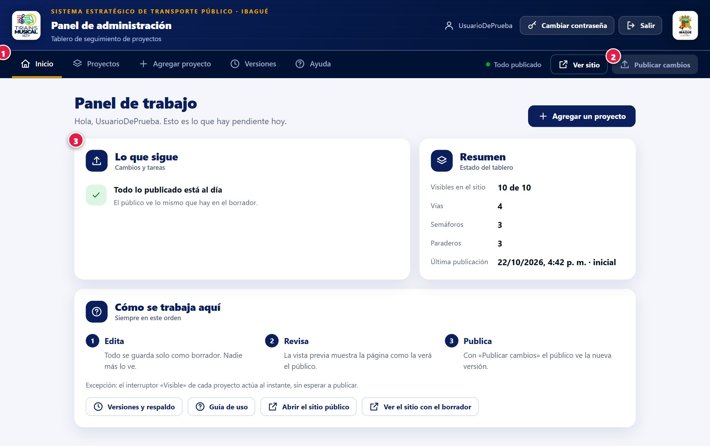
Inicio del panel: lo pendiente de hoy.
1
Pestañas. Inicio · Proyectos · Agregar proyecto · Versiones · Ayuda. Siempre visibles, con la misma barra azul del sitio público.
2
Estado y publicar. Dice si tus cambios están guardados y si el público ya los ve. El botón dorado «Publicar cambios» está siempre a mano.
3
Lo que sigue y Resumen. Te dicen qué hay pendiente (cambios sin publicar, proyectos incompletos u ocultos) y el estado general del tablero.
Consejo. El panel se guarda solo. El mensaje «Guardado» confirma que tu último cambio ya quedó en el borrador.
4 Mostrar u ocultar un proyecto
Úsalo cuando un proyecto tenga información incorrecta o incompleta que aún no debe verse.
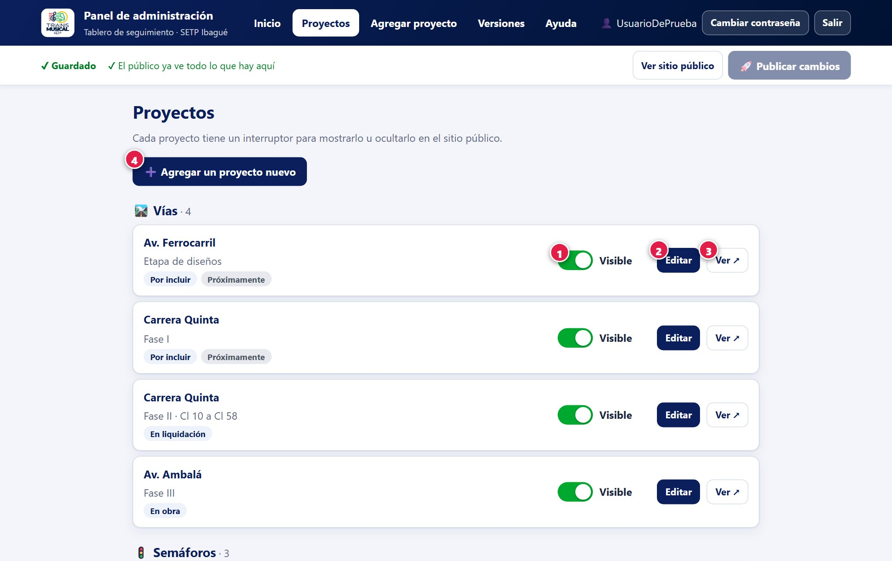
Lista de proyectos, agrupados por tipo.
1
Interruptor. Verde = visible para el público; gris = oculto. El cambio es inmediato.
2
Editar: abre el proyecto.
3
Ver: abre el sitio con el borrador, en otra pestaña.
4
Agregar un proyecto nuevo (capítulo 5).
1
Busca el proyecto y pulsa su interruptor.
2
Si lo vas a mostrar, el panel te pide confirmar que la información es correcta.
3
Listo: el público lo ve (o deja de verlo) de inmediato.
Las etiquetas amarillas «Cambios sin publicar» o «Nuevo, sin publicar» indican proyectos con trabajo pendiente de publicar. Un proyecto nuevo nace oculto.
5 Agregar un proyecto nuevo
Un asistente de 3 pasos hace las preguntas. No necesitas tener todo: lo que falte se agrega después.
Paso 1 · ¿Qué proyecto es?
1
Nombre (obligatorio) y fase (opcional). Ej.: «Carrera Quinta» y «Fase II».
2
Tipo: Vías, Semáforos o Paraderos. Define dónde aparece en la portada.
3
Siguiente.
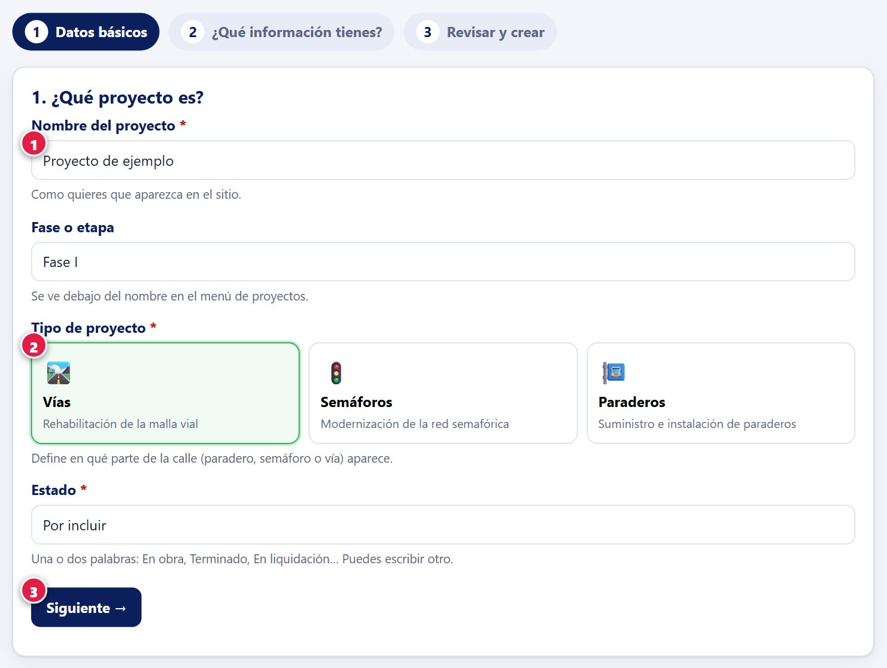
Paso 2 · ¿Qué información tienes hoy? (la «lista de compras»)
Marca las casillas de lo que ya tienes. Cada una trae la pregunta y lo que vas a necesitar (documentos, de dónde sacarlo).
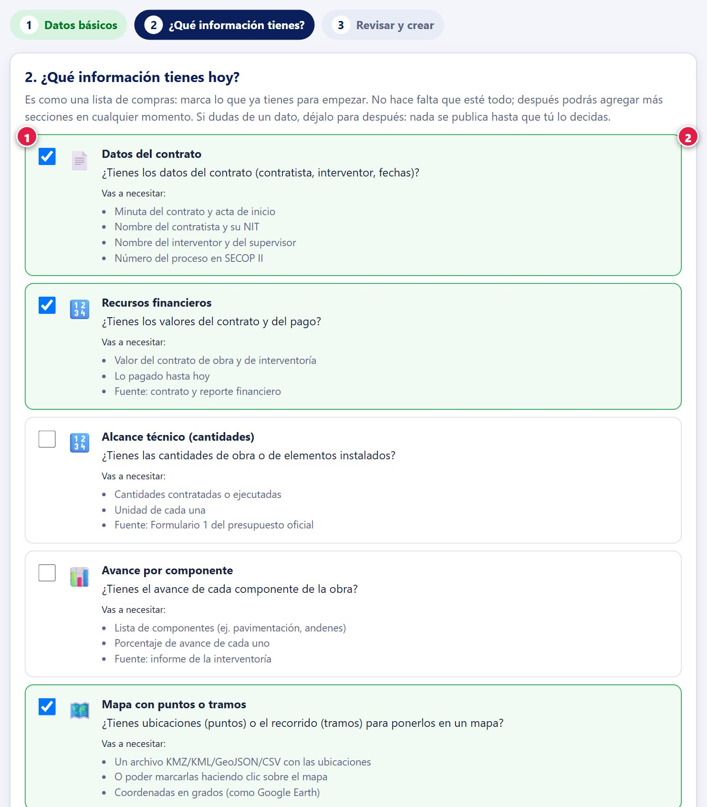
1Cada tarjeta es una sección posible · 2marcada = se creará.
Paso 3 · Revisa y crea
Verás un resumen. Pulsa «Crear proyecto y empezar a llenarlo». El panel abre el editor del proyecto.
Ojo: el proyecto se crea oculto. Llena la información, revísala en la vista previa y, cuando esté lista, actívalo con el interruptor y publica.
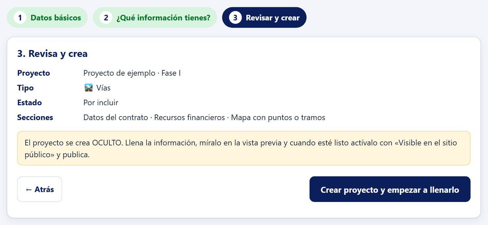
6 Editar un proyecto
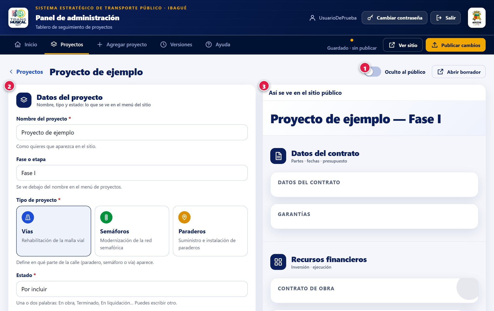
Editor: formularios a la izquierda y vista previa a la derecha.
1
Interruptor de visible/oculto y botón para abrir el borrador en el sitio.
2
Formularios en tres bloques: 1 · Datos del proyecto, 2 · Portada (título, descripción, cifras y círculos de avance) y 3 · Secciones.
3
Vista previa en vivo: se actualiza al escribir. En pantallas pequeñas se abre con «Ver cómo queda».
Cómo se llena una sección
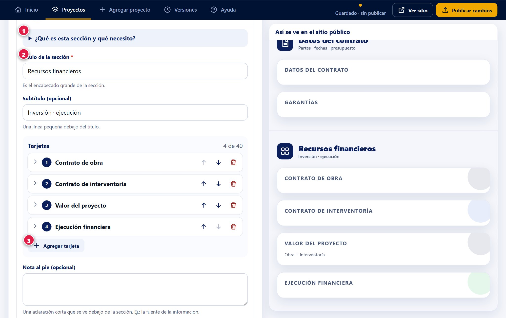
Sección abierta («Recursos financieros»).
1
«¿Qué es esta sección y qué necesito?»: explica para qué sirve, qué datos pide y un ejemplo.
2
Campos con ejemplo en gris («Ej.: 78.020»). El asterisco rojo * es obligatorio.
3
Agregar suma otro elemento a la lista; con las flechas se reordenan y con se quitan.
Agregar más secciones
Al final, «Agregar una sección» abre la lista de compras: arriba, secciones sugeridas ya preparadas; abajo, tipos en blanco.
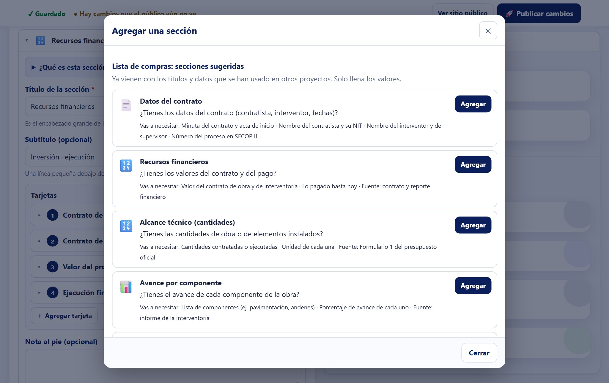
Ventana «Agregar una sección».
Tipo de sección
Úsala para…
Cifras destacadas
Tarjetas con un número grande (cantidades, valores).
Avance por componentes
Barras de avance de 0 a 100 %.
Tabla de datos
Contrato, garantías, forma de pago.
Mapa
Puntos (paraderos, semáforos) o tramos de vía.
Gráfico de distribución
Porcentajes del presupuesto.
Cronograma
Fases y plazos con fechas.
Cifras sociales
Empleo local, mujeres, jóvenes, con ilustración o foto.
Texto con foto
Importancia del proyecto o contexto.
Lista de tarjetas
Ítems especiales, programas, hitos.
⭐ Recuadro destacado
Un logro o innovación.
Galería de fotos
Registro fotográfico.
Documentos y enlaces
Actas, contratos y SECOP II (enlaces https://).
7 Subir puntos y tramos al mapa
Hay cuatro maneras; usa la que te quede más cómoda. Se pueden combinar en el mismo mapa.
Manera
Cuándo conviene
Clic en el mapa
Pocos puntos, o ajustar uno.
Dibujar un tramo
Marcar un recorrido de vía a mano.
Subir archivos
Muchos puntos o tramos (Excel, KMZ, GPX, Shapefile, CSV…).
Pegar coordenadas
Tienes unas pocas coordenadas en un correo o documento.
7.1 Un punto con clic
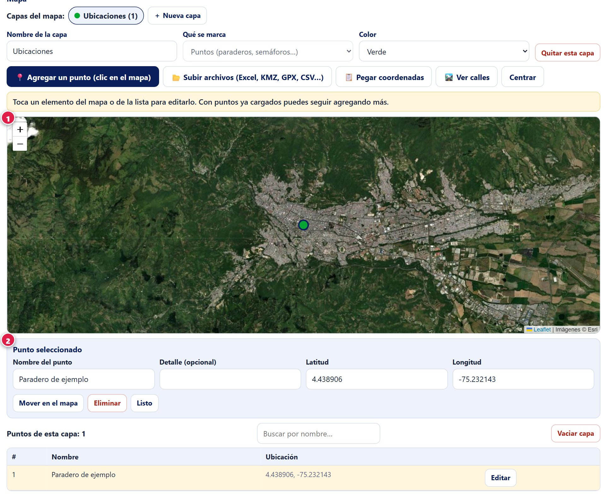
Punto agregado y su recuadro de edición.
1
Pulsa «Agregar un punto» y haz clic en el mapa, en el lugar exacto. Puedes acercarte con la rueda del ratón o los botones −.
2
Abajo aparece el «Punto seleccionado»: escribe el nombre y, si quieres, un detalle. Con Mover en el mapa lo reubicas y con Eliminar lo borras.
Consejo. Cambia a «Ver calles» cuando necesites ubicar una esquina; vuelve a satélite con el mismo botón.
7.2 Un tramo dibujando
En una capa de tramos: pulsa «Dibujar un tramo», haz clic punto por punto siguiendo la vía y termina con «Terminar tramo» (o doble clic). Escribe el nombre y elige el estado: ejecutado (verde), en curso (azul) o pendiente (gris). Si te equivocas, «Deshacer último punto».
No hace falta convertir nada: el panel reconoce el formato solo. Pulsa «Subir archivos» y arrastra uno o varios a la vez.
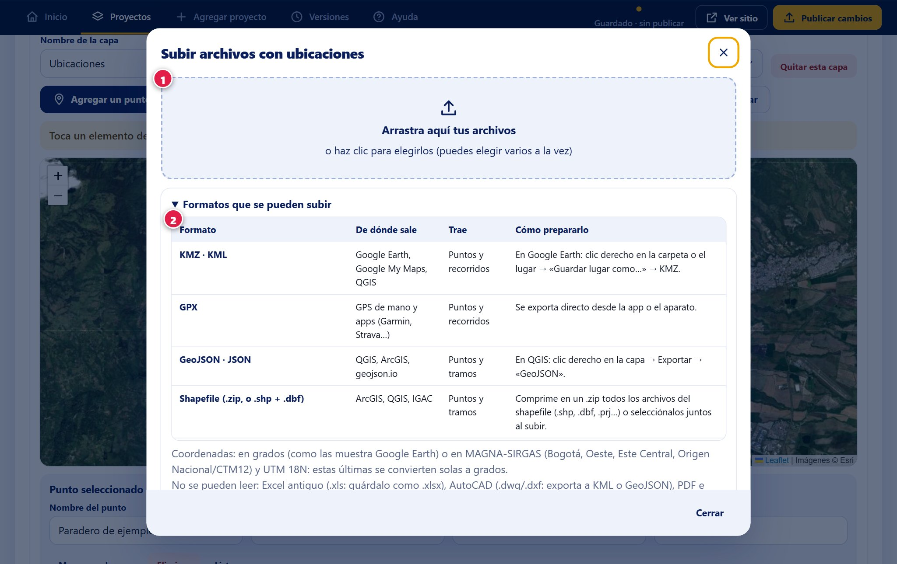
1Zona para arrastrar · 2tabla de formatos aceptados y cómo preparar cada uno.
Antes de agregar, el panel muestra lo que encontró y deja elegir si va a una capa existente o a una nueva:
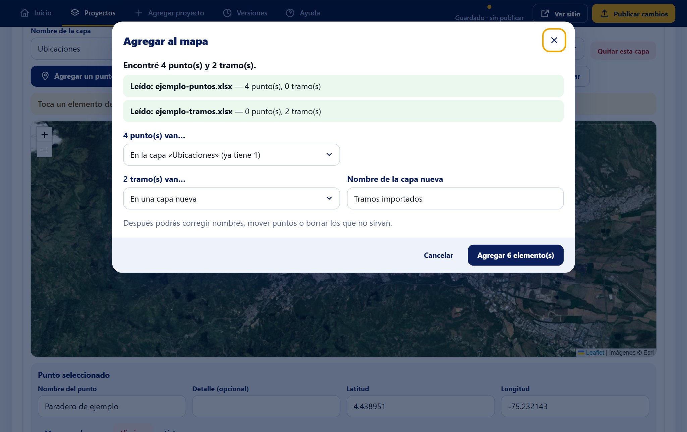
Resultado de leer dos archivos de Excel: 4 puntos y 2 tramos.
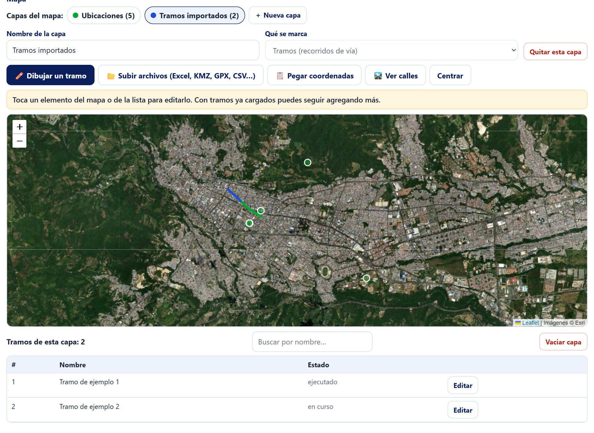
Mapa después de importar: capas, tramos en colores por estado y lista editable.
Lo que el panel hace por ti
Convierte coordenadas: si vienen en metros (MAGNA-SIRGAS Bogotá, Oeste, Este Central, Origen Nacional/CTM12 o UTM 18N) las pasa a grados solas y te avisa.
Corrige latitud y longitud invertidas, comas decimales (4,4389) y grados-minutos-segundos.
Simplifica trazos con miles de vértices sin cambiar su forma, para que la página cargue rápido.
Avisa si hay elementos fuera de Ibagué y si un archivo no se pudo leer (sin frenar a los demás).
Cómo armar tu tabla en Excel o CSV
Para PUNTOS: columnas
nombre · detalle · lat · lon (solo lat y lon son obligatorias; el orden no importa).
Para TRAMOS: columnas
tramo · orden · lat · lon · estado. Una fila por vértice: las filas con el mismo tramo forman una línea, en el orden de orden.
Ayuda lista. En la misma ventana hay plantillas descargables y archivos de ejemplo de cada formato (Excel, LibreOffice, CSV, KMZ, KML, GPX, GeoJSON) para usarlos de molde.
7.4 Pegar coordenadas
«Pegar coordenadas» acepta, una por línea: Nombre; lat; lon, o solo 4.4389, -75.2322 (como las copia Google Maps), grados-minutos-segundos (4°26'20"N 75°13'56"W), WKT de QGIS (POINT(-75.23 4.44)) o el contenido completo de un archivo GeoJSON, KML, GPX o CSV.
Límites: una capa admite hasta 5.000 puntos o tramos, y un mapa hasta 8 capas. Para ubicaciones masivas (como los 1.063 paraderos) usa un archivo, no clics.
8 Fotos y derechos de autor
El sitio es público: cada foto debe poder publicarse. El panel lo hace obligatorio.
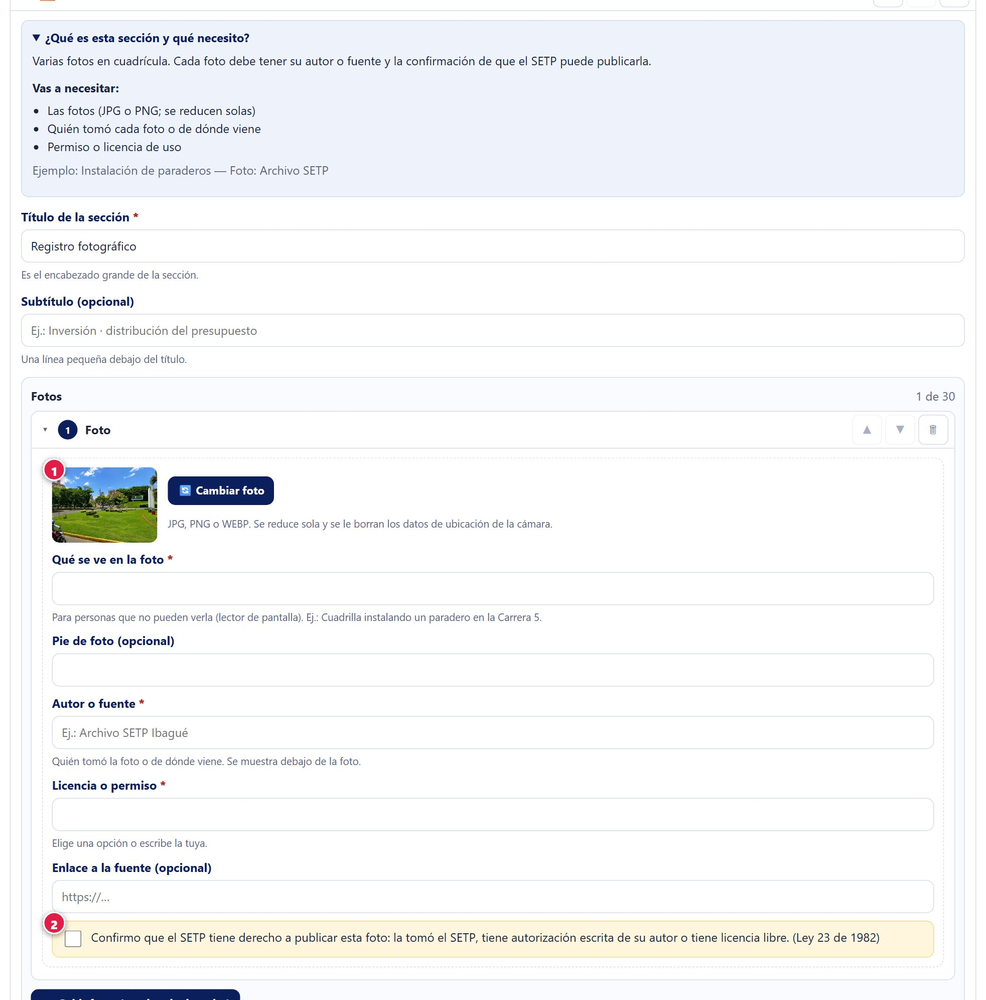
Una foto subida y los datos que se piden.
1
Subir foto (JPG, PNG o WEBP). Se reduce sola (máx. 1.600 px) y se le borran los datos de ubicación de la cámara. En la galería se pueden elegir varias a la vez.
2
Confirmación de permiso: sin esta casilla, más descripción, autor y licencia, el panel no deja publicar.
Qué poner en cada campo
Campo
Qué escribir
Qué se ve en la foto
Una frase corta, para personas que usan lector de pantalla.
Autor o fuente
Quién la tomó. Ej.: «Registro fotográfico del SETP Ibagué».
Licencia o permiso
Ej.: «Foto propia del SETP», «Autorizada por su autor», «CC BY 4.0», «CC BY-SA 4.0», «CC0 / dominio público».
Enlace a la fuente
Si viene de Wikimedia Commons u otro sitio, la dirección de la ficha de la foto.
No publiques: fotos bajadas de internet sin licencia libre; imágenes generadas con inteligencia artificial presentadas como fotos reales de la obra; ni personas que se puedan identificar sin su autorización por escrito (Ley 1581 de 2012). Si hay una persona en la foto, recórtala o difumínala.
Para ilustrar sin fotos, el tablero ya incluye ilustraciones propias (sin derechos de terceros) en el componente social.
Revisa qué va a cambiar: lista de proyectos nuevos, modificados o quitados.
3
Si hace falta, corrige lo que el panel marque. Escribe una nota opcional y pulsa «Publicar ahora».
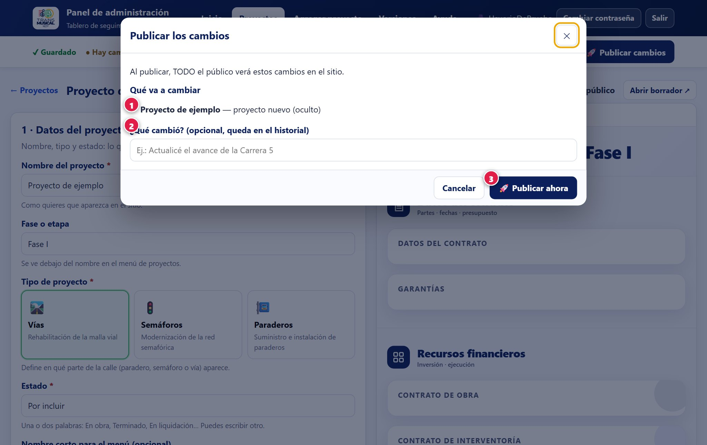
1Qué cambia · 2nota para el historial · 3publicar.
El panel bloquea la publicación si un proyecto visible tiene fotos sin permiso confirmado, y avisa de campos obligatorios vacíos (lo incompleto no se muestra). El sitio público puede tardar hasta un minuto en actualizarse.
Versiones y respaldo
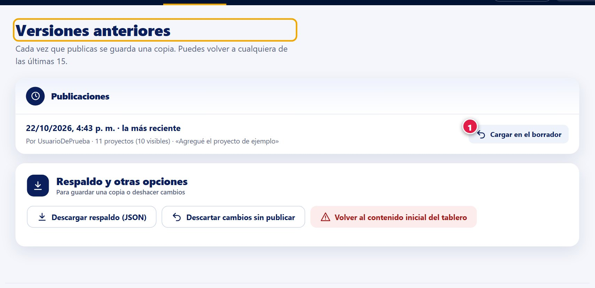
Cada publicación queda guardada (las últimas 15).
Cargar en el borrador: recupera una versión anterior; luego revisa y publica si todo está bien.
Descargar respaldo (JSON): copia de todo el contenido, para guardarla.
Descartar cambios sin publicar: el borrador vuelve a lo que ve el público.
10 Seguridad y problemas frecuentes
Buenas prácticas
La contraseña es personal: no la compartas ni la pegues en chats o correos.
No subas datos personales de la ciudadanía (nombres, cédulas, teléfonos, rostros).
Publica solo información verificada; ante la duda, oculta el proyecto.
Cierra sesión en computadores compartidos.
El sistema registra qué usuario publicó cada cambio y cuándo.
Si algo no sale bien
Qué pasa
Qué hacer
«Alguien más guardó cambios»
Dos personas editaron a la vez. Pulsa «Recargar el panel» y repite tu cambio.
«Tu sesión terminó»
Ingresa de nuevo; lo que escribiste sigue en pantalla y se guarda al volver.
No me deja publicar
Lee el recuadro rojo «Antes de publicar corrige»: suele ser una foto sin permiso confirmado.
Un archivo del mapa no se lee
Mira el mensaje: dice qué falta (columnas «lat» y «lon», formato no soportado…). Prueba con la plantilla o un archivo de ejemplo.
Los puntos salen en otro lugar
Revisa que latitud y longitud no estén al revés y que el archivo sea de Ibagué; el panel avisa cuando quedan fuera.
Borré algo por error
Versiones → «Cargar en el borrador» una versión anterior. Si no se había publicado, usa Ctrl+Z en el campo o vuelve a escribirlo.
Aparece «Falta terminar la instalación»
Falta conectar el almacenamiento o definir usuario y contraseña en Vercel. Lo hace quien administra el proyecto.
La ayuda rápida también está en el panel, en el menú Ayuda.
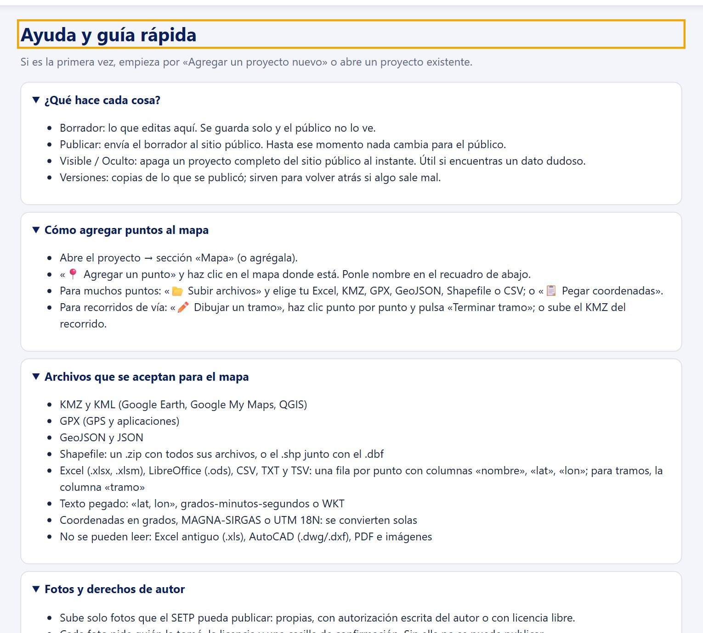
Sección «Ayuda y guía rápida» del panel.
Parte 2
Para quien consulta o presenta el tablero (cómo acceder y cómo se ve todo)
11 Cómo acceder
1
Abre en el navegador la dirección del tablero: https://tablero-setp.vercel.app (o la que el SETP defina, por ejemplo un enlace desde transmusical.gov.co).
2
No hay registro ni contraseña: es público. Funciona en computador, tableta y celular.
3
La primera vez aparece un aviso de privacidad y cookies. Pulsa «Entendido»; puedes revisarlo luego en «Preferencias de cookies», al final de la página.
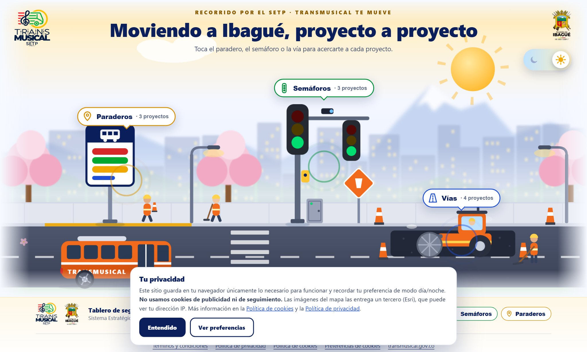
Primera visita: portada con el aviso de privacidad.
Navegadores: Chrome, Edge, Firefox o Safari actualizados. Se recomienda conexión a internet (los mapas se descargan al verlos).
Para compartir un proyecto: abre el proyecto y copia la dirección del navegador; termina en #/p/nombre-del-proyecto y lleva directo a esa página.
12 La portada: paraderos, semáforos y vías
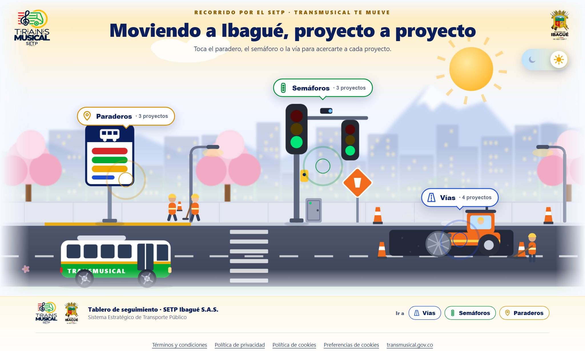
Portada animada: una calle de Ibagué con los tres tipos de proyecto.
Toca el paradero, el semáforo o la vía: la cámara se acerca y se abre la lista de proyectos de ese tipo. Cada etiqueta indica cuántos proyectos hay.
El interruptor / (arriba a la derecha) cambia entre día y noche; el sitio recuerda tu elección.
Abajo, «Ir a» salta directo a Vías, Semáforos o Paraderos.
La barra superior permite pasar de un proyecto a otro y volver a Inicio en cualquier momento.
13 Dentro de un proyecto
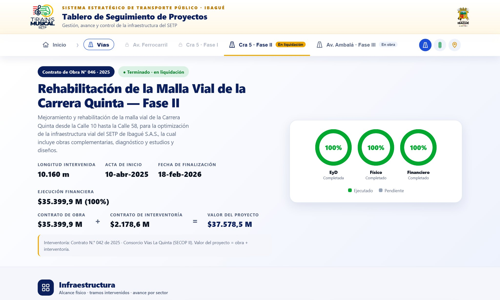
Carátula del proyecto: estado, datos clave, valor y círculos de avance.
•
Etiquetas sobre el título: contrato, estado de la obra.
•
Datos clave: longitud, fechas, ejecución financiera.
•
Círculos de avance: EyD (estudios y diseños), Físico y Financiero. Verde = ejecutado; gris = pendiente.
Más abajo, el proyecto se organiza en secciones. Estas son las que más se consultan:
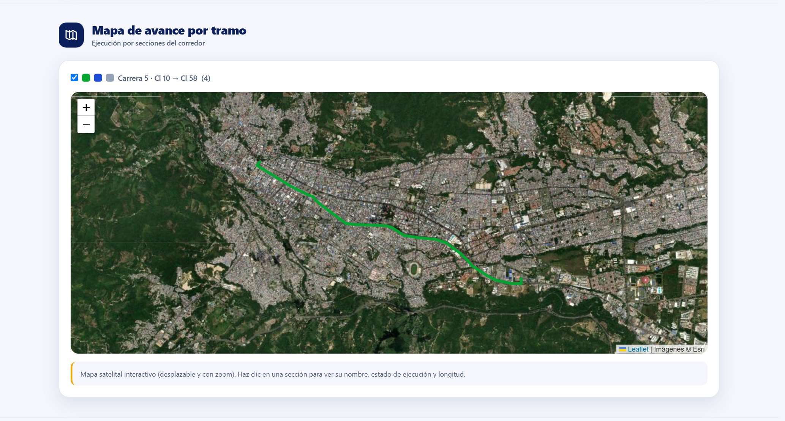
Mapa: toca un tramo o punto para ver su nombre y estado.
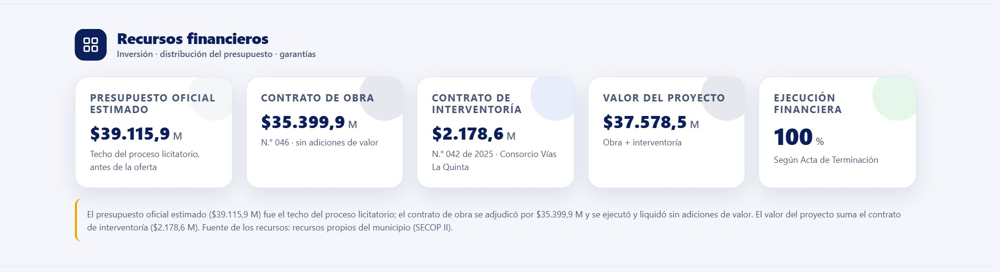
Recursos: cifras y valores del contrato.
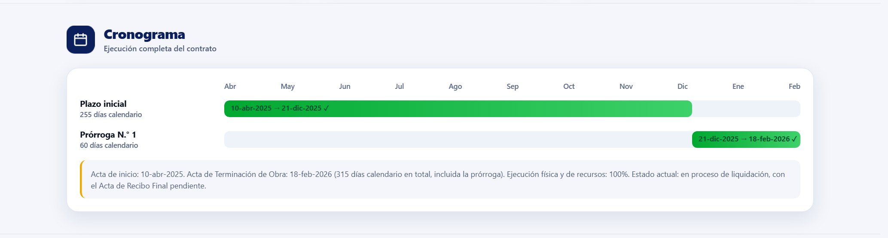
Cronograma: plazos, prórrogas y su estado.
Sección
Cómo leerla
Mapa
Capas con casillas para prenderlas o apagarlas. Tramos: verde ejecutado, azul en curso, gris pendiente. Ventana con nombre al tocar.
Avance por componente
Barras de 0 a 100 %: cuánto va de cada componente de la obra.
Recursos financieros
Valor del contrato de obra, de interventoría y del proyecto, en millones de pesos.
Cronograma
Barras en el tiempo: plazo inicial, prórrogas y fecha estimada de terminación.
Componente social
Compromisos de vinculación de personal local, mujeres, jóvenes y población protegida.
Documentos
Enlaces a contratos y actas en el SECOP II y otras fuentes oficiales.
Las cifras son informativas y se actualizan cuando el SETP publica una nueva versión; en caso de diferencia, prevalecen los documentos oficiales.
14 En el celular, accesibilidad y privacidad
En el celular
El tablero se adapta a pantallas pequeñas: las secciones se apilan y los mapas se manejan con los dedos (pellizcar para acercar, arrastrar para mover). Es ideal para consultarlo en campo o compartir el enlace por mensaje.
Accesibilidad
Se puede recorrer solo con teclado (Tab, Enter) y tiene enlace «Saltar al contenido».
Las fotos e ilustraciones tienen descripción para lectores de pantalla.
Respeta la opción «reducir movimiento» del sistema.
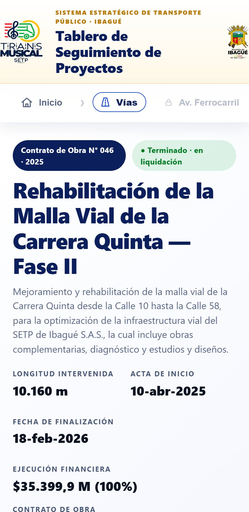
Vista en celular.
Privacidad y cookies
El sitio no pide datos a quien lo visita: no hay formularios ni cuentas.
No usa cookies de publicidad, seguimiento ni analítica. Solo recuerda en tu navegador el modo día/noche y tu decisión sobre el aviso.
Las imágenes satelitales las entrega un tercero (Esri), que recibe tu dirección IP.
Al pie de la página están los enlaces a Términos y condiciones, Política de privacidad y Política de cookies.
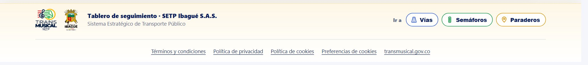
Pie de página con los enlaces legales y «Preferencias de cookies».
15 Guion para una presentación de 10 minutos
Una propuesta para explicar el tablero a directivos, concejales o la comunidad.
Minutos
Qué mostrar
Qué decir
0–1
Portada (capítulo 12)
«Este es el tablero público de seguimiento de los proyectos del SETP. Cualquier persona lo consulta sin registrarse.»
1–2
Tocar un tipo (vías, semáforos o paraderos)
«Los proyectos se agrupan en tres tipos y cada uno tiene su página.»
2–4
Carátula de un proyecto
Explicar etiquetas, datos clave y los tres círculos de avance (EyD, Físico, Financiero).
4–6
Mapa del proyecto
Mostrar tramos o puntos; tocar uno; apagar y prender capas.
6–7
Recursos y cronograma
Valor del contrato, ejecución y plazos.
7–8
Componente social y documentos
Empleo local y enlaces al SECOP II para verificar las fuentes.
8–9
Celular
Abrir el enlace en un teléfono para mostrar que funciona en campo.
9–10
Cierre
La información la actualiza el propio SETP, se publica solo tras revisión y se puede ocultar un proyecto mientras se verifica un dato.
Consejos para presentar
Pantalla completa con F11; acerca o aleja con Ctrl + / Ctrl −.
En salas oscuras, usa el modo noche de la portada.
Abre los proyectos que vas a mostrar antes de empezar, para que los mapas ya estén cargados.
Para ensayar con cambios que aún no están publicados, quien administra puede abrir el sitio con ?vista=borrador (requiere haber iniciado sesión en el panel).
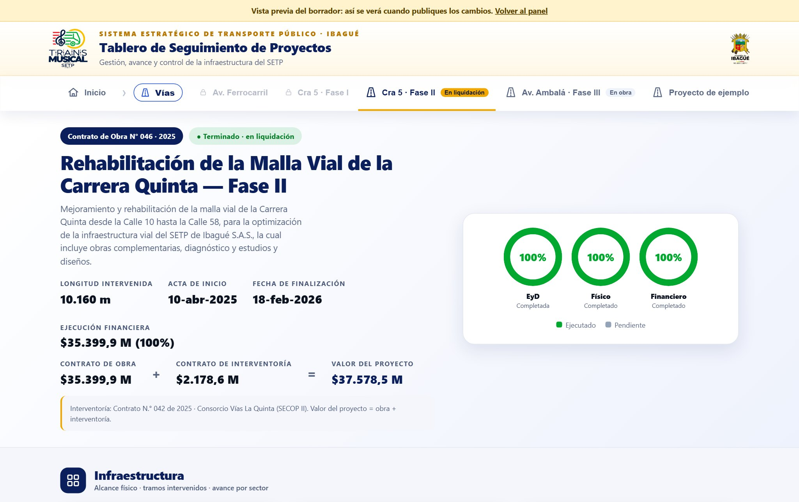
Vista del borrador: el sitio público con una barra que recuerda que es una vista previa.
A Archivos que acepta el mapa
Formato
De dónde sale
Notas
KMZ · KML
Google Earth, Google My Maps, QGIS
Puntos y recorridos. En Google Earth: «Guardar lugar como…» → KMZ.
GPX
GPS de mano y aplicaciones
Puntos (waypoints), rutas y trazas.
GeoJSON · JSON
QGIS, ArcGIS, geojson.io
También una lista de objetos con lat y lon.
Shapefile
ArcGIS, QGIS, IGAC
Un .zip con todos sus archivos, o el .shp junto al .dbf. Toma los nombres de la tabla de atributos.
Excel (.xlsx, .xlsm) · LibreOffice (.ods)
Tu propia tabla
Columnas nombre, lat, lon (y tramo, orden, estado para recorridos). Se lee la primera hoja con datos.
CSV · TXT · TSV
Excel guardado como CSV, bloc de notas
Separador ;, o tabulador; acepta comas decimales.
Texto pegado
Cualquier documento
«lat, lon», grados-minutos-segundos, WKT, o el contenido de un archivo.
.zip con varios archivos
—
Se leen los que reconoce (shapefile, KML, CSV, Excel…).
Sistemas de coordenadas que se convierten solos: grados (WGS84), MAGNA-SIRGAS Colombia Bogotá, Oeste y Este Central, MAGNA-SIRGAS Origen Nacional (CTM12) y UTM zona 18 Norte.
No se pueden leer: Excel antiguo (.xls: guárdalo como .xlsx), AutoCAD (.dwg/.dxf: exporta a KML o GeoJSON), PDF e imágenes (no traen coordenadas). Tamaño máximo por archivo: 40 MB.
Archivos de ejemplo (en la ventana «Subir archivos»): ejemplo-puntos.xlsx, ejemplo-tramos.xlsx, ejemplo-puntos.ods, ejemplo-puntos.csv, ejemplo-tramos.csv, ejemplo.kmz, ejemplo.kml, ejemplo.gpx y ejemplo.geojson.
B Glosario
EyD
Estudios y diseños.
SECOP II
Plataforma de contratación pública de Colombia, donde están los contratos y procesos.
Interventoría
Contrato que vigila la ejecución técnica, administrativa y financiera de la obra.
WGS84 · grados
Forma estándar de dar coordenadas (la de Google Earth y los GPS).
KMZ / KML
Archivos de Google Earth con lugares y recorridos (el KMZ es el KML comprimido).
Borrador / publicado
Versión en edición (privada) / versión que ve el público.
C Contacto y documentos legales
SETP Ibagué S.A.S. · Calle 60 #8-37, C.C. Acqua, Oficinas 1201 y 1208, Ibagué (Tolima) · ventanillaunica@transmusical.gov.co · WhatsApp +57 314 436 4606 · PQRS: transmusical.gov.co/formulario-pqrs · Línea anticorrupción 018000189801.
Horario: lunes a jueves 7:30–12:00 y 14:00–17:00; viernes 7:00–15:00.
El sitio publica sus Términos y condiciones, Política de privacidad y Política de cookies (enlaces al pie de la página). Se apoyan en la Ley 1581 de 2012 y el Decreto 1377 de 2013 (datos personales), la Ley 1712 de 2014 (transparencia), la Resolución 1519 de 2020 de MinTIC (accesibilidad) y las normas de derechos de autor (Ley 23 de 1982 y Decisión Andina 351 de 1993).